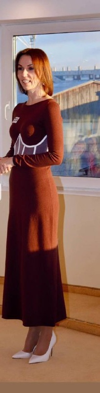
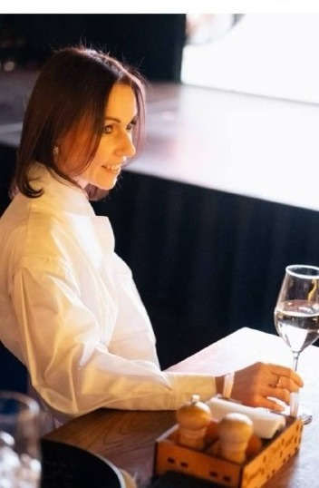
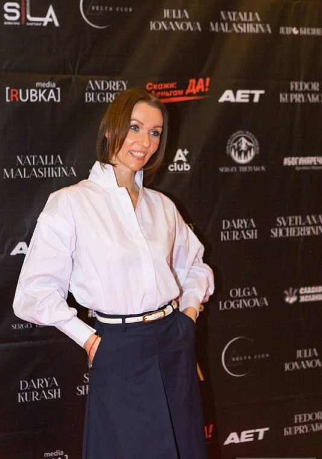

Личная консультация
Разговор один на один о том, что происходит в вашей жизни, отношениях и сексе. Можно остаться в долгосрочной терапии
Онлайн или очно в Красноярске
Записаться



Клинический психолог и сексолог. Помогаю услышать свои желания, выстроить отношения и раскрыть сексуальность
Записаться на консультацию
Придя ко мне, вы не получаете огромный список того, что с вами «не так»
Мы шаг за шагом выстраиваем путь. Потихоньку, терапия за терапией. И то, что ещё вчера казалось непосильным, постепенно становится возможным
Я клинический психолог и сексолог. Работаю с женщинами, которые устали быть хорошими, удобными и сильными и хотят снова слышать свои желания
Об этом мне пишут чаще всего. Можно прийти с любой из этих тем или с той, которую пока сложно назвать


Иногда измена бывает попыткой стать другой собой
Когда секс случается из чувства долга, а не потому, что хочется
Почему мы хотим одного, выбираем другое и живём не так, как хочется
Где заканчивается забота и начинается взаиморасчёт
Начать можно с личной встречи или с группы, где проще сделать первый шаг
Разговор один на один о том, что происходит в вашей жизни, отношениях и сексе. Можно остаться в долгосрочной терапии
Модули с заданиями: внутренние родители, образ себя, границы, желания
Исследуем разные части себя через кино и видим, как они влияют на жизнь
Учимся замечать удовольствие в обычном дне
Игра о природе сексуальности в небольшой группе, за большим столом в кабинете
Свободная одежда, босиком, музыка. Здесь нет продаж, только ваш внутренний отклик
Встречи в Красноярске: лекции с практикой, просмотр фильма с разбором, ужин в ресторане с темой вечера
Бесплатные прямые эфиры в Telegram-канале. Говорим честно и по-настоящему


Слова клиенток из переписки после эфиров, курса и личной терапии
Я стала спокойнее, внутри появилась тишина, теперь в голове разложено всё по полочкам. С мужем отношения стали налаживаться, мы стали больше проводить время вместе. Теперь я с уверенностью могу сказать: меня достаточно
После первого модуля курсаМы уже затрагивали тему принятия с Мариной в личной терапии. И вот теперь этот пазл сложился. Принятие не равно терпению
Из личной терапииБлагодарю, тема была очень полезная. Я наконец-то разобралась со своими фантазиями, узнала причины их возникновения, теперь больше принятия к этой теме и к себе в том числе
После эфираСпасибо за полезную информацию, всегда думала, что нужно стрип танцевать, но это не моё состояние
АнастасияБлагодарю за эфир! Стало понятнее про сексуальные фантазии. Что это не только не стыдно, но ещё и полезно
После эфира